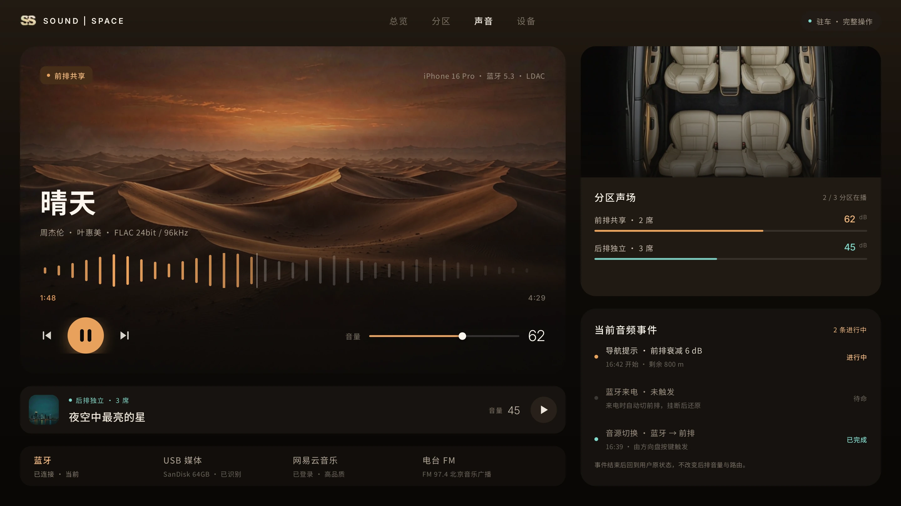
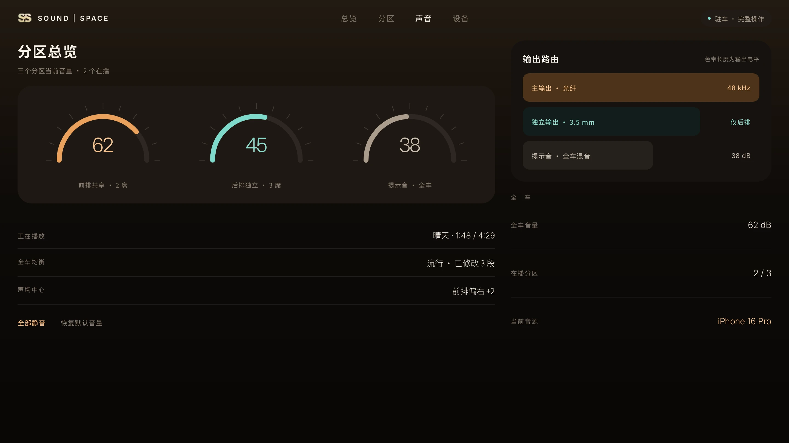
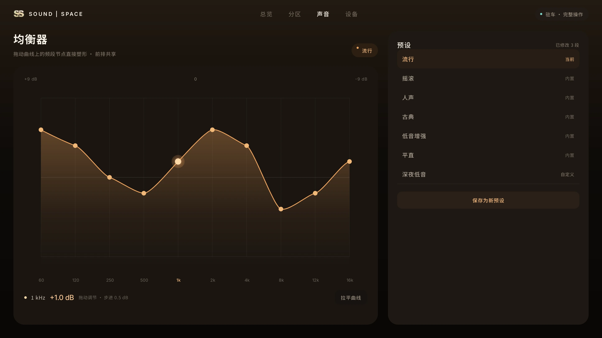

← 返回全部作品
车载 HMI
SOUNDSPACE
声音变了，界面上找得到原因
车内三个分区共用一套音响。导航一响前排被压低，后排放歌前排跟着变，蓝牙断了只丢一块——界面从来没说过为什么。我把它做成了 5 个入口、11 屏的车机 HMI 概念。

三个分区抢一套音响，用户只看到音量在动
谁在占用、压低了多少、什么时候恢复，这些原来都在系统里，界面上一个都不说。
- 打断不等于暂停：导航只压音量，播放进度、队列和音频焦点都不动。
- 先选区域，再调数字，没有全局音量。
- 按钮不隐藏：条件不满足就留在原位，写明原因，给出去处。
五个入口，每屏回答一个问题
总览看三块区域各是多少；播放看谁在放、放在哪；详情看调的是哪块；声场看位置和频段；设置看默认规则。





被打断，和坏了，是两回事
导航介入要压音量、留住进度、结束后自动恢复；设备断了要给原因和出口，但不能影响别的分区。
- 打断只降增益：弹层写明前排衰减 6 dB，后排不受影响，放完回到 62。
- 异常只影响相关分区：后排右席没响应就路由到相邻输出，前排不动。
- 所有中断态最多占 6 秒，能一键跳过，恢复后回到用户原来的状态。


开起来的时候，导航占主区
行驶中只收起入口，不删信息；音量状态用胶囊和数字留在边上，不用切页确认。
- 五个入口都留着，设置类改成精简态，避免边开边点深几层。
- 导航、车辆状态、途经点收进右侧卡片，看一眼就回到路线。

三种控件：表盘、色带、规格表
能量的大小用表盘，比例用色带，事实用规格表，一页里不混用。
琥珀代表前排共享和系统介入，青绿代表后排独立。颜色不单独承担状态，旁边一定有字。
数值都写在设置页和状态卡上：音量上限 80 dB、自动重连 30 秒、提示音延迟 0.2 秒、导航介入衰减 6 dB。
界面成立，能力边界写在前面
11 屏是按车机单端画的，DSP 和实车音响配置没验证过。
- 做完的：五个入口、三类异常、两类打断、三套控件语言。
- 待验证：目标车型的 DSP、头枕扬声器和定向输出能力。
- 没做的：用户测试、实车联调、长时驾驶下的注意力测量。
 Homie · 一句话之后，老人要看得懂
Homie · 一句话之后，老人要看得懂 智审 · AI 指出来，人来核
智审 · AI 指出来，人来核